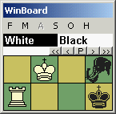
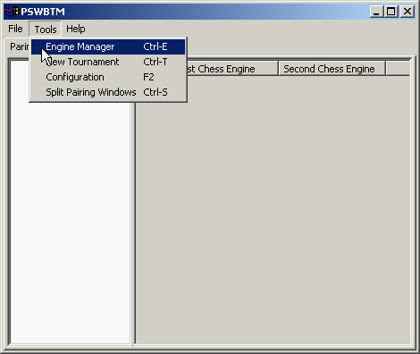
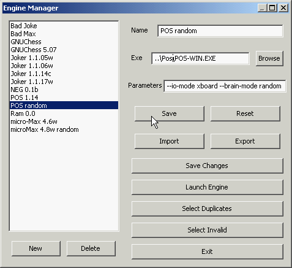

The WinBoard Gold Pack 4.4.0For the ultimate WinBoard experience! |  |
The PSWBTM software basically consists of a single application file, PSWBTM.exe, located in the PSWBTM folder of te WinBoard Gold Pack. Just double-click it to run PSWBTM. The PSWBTM main window that pops up consists of a menu bar with "File", "Tools" and "Help" menu, and below it an area with 4 selectable displays, "Pairings", "Standings", "Control" and "Details".
The first step in using PSWBTM is configuring it. Basically, this only means you have to tell it where it can find WinBoard. The WinBoard Gold Pack comes with PSWBTM already configured, so you only have to perform this step if you moved the WinBoard or PSWBTM folders around or renamed them. How you would have to do that is described here.
The next step is to use PSWBTM's engine-manager function to install some engines in the database. Here also the WinBoard Gold Pack comes with some engines pre-installed (if you haven't altered the folder structure). Nevertheless, we first invoke the engine manager to see if they are OK. This is what you would also do when you wanted to play a Human-engine game against an already installed engine, or use your engine in over-the-board tournaments as human operator.
Select the menu "Tools -> Engine Manager". This makes the engine-manager window pop up. On the left you will see the list of names of all installed engines, by the names that the user has given them. In the distribution these are only two engines pre-installed, CPW and Fairy-Max. (CPW is installed in two different ways, though, so you see three entries.) Left-click one of the engines in this list (say Fairy-Max) to select it. This highlights this engine in blue, while the details of how it is installed appear in the three text lines on the upper right. Don't bother with these lines yet, but left-click the button "Launch Engine". This will invoke WinBoard with this engine, so you can play a game against it, or have it play itself. At this point you are in the same position as when you started WinBoard through a shortcut for running this engine, or when you would have started through the WinBoard startup dialog, entering all the engine details there by yourself. PSWBTM has done all this for you, taking the egine details from the engine-anager database.
You can now customize WinBoard through its own menus, so that the display looks like you want to have it, (size, colors), the proper auxiliary windows are up and correctly sized and positioned, adjudication options are set as you intend to use them, select a GUI book, engine hash-table sizes, etc. WinBoard will remember almost everything you do here, and come up the next time exactly as you left it this time. Only transient WinBoard options, like the Chess variant, will be forgotten and start at their default value next time. So you can safely play a game of Gothic Chess or Knightmate against Fairy-Max now, that won't affect future operation.
Once you are satisfied with the WinBoard settings, and perhaps have played a game or had the engine play itself, you simply quit WinBoard (e.g. by closing its window), and this will return you to the task manager. You could now select another engine, and launch that, or quit the engine manager by clicking the "Exit" button at the bottom.